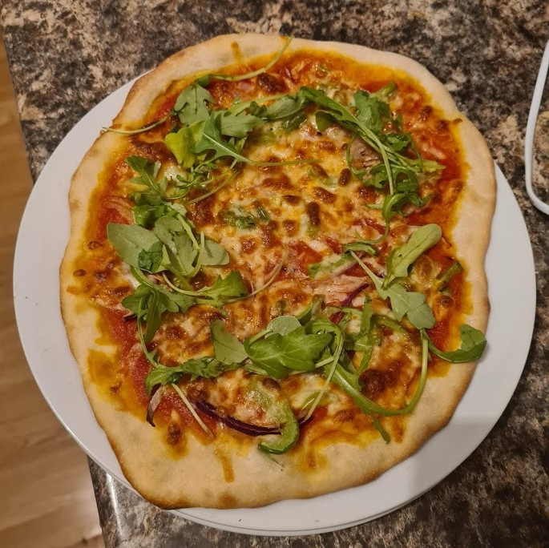

Preparation Information
- Total Time: ~2.5 hours
- Active Time: 25 mins
- Feeds: ~4 pizzas
Ingredients
Pizza Dough
- 320g lukewarm water
- 1 teaspoon dry active yeast
- 1 heaped teaspoon sugar
- 500g white flour, preferably strong bread flour
- 2 teaspoons salt
- 1 teaspoon garlic powder (optional)
Sauce
- 1 can (400ml) chopped tomatoes
- 1 teaspoon onion powder
- 1 teaspoon garlic powder
- 3/4 teaspoon salt
- 1 teaspoon dried basil/handful fresh basil leaves
- 1/4 teaspoon crushed chillies
Toppings
- 50g mozzarella (preferably not pre-shredded)
- 25g cheddar, grated
- Chopped veggies/any toppings of your choice

Preparation
- Mix the water, sugar and yeast. Leave for a few minutes to combine. Then, in a large bowl, combine the flour, salt, garlic powder and yeast mixture.
- Knead dough on a floured surfacefor 8-10 minutes, until well-combines and elastic. Cover with a tea towel or cling film, and leave to rise for at least an hour, longer if possible.
- Split into four dough balls (roughly 200g each), lightly coat the balls in oil, and wrap or cover, leaving to prove for a further 30 minutes.
- In the meantime, preheat your oven to 220 degrees Celsius. In a small saucepan over a medium heat, add your sauce ingredients, stirring occassionally. After a couple of minutes, use a blender to blend to a relatively smooth consistency, and remove from heat.
- Take the first of your dough balls, and either stretch our with your hands, or use a rolling pin to roll out the dough. Place on a lightly oiled baking tray, and add your sauce. Where you place the sauce will determine the size of the crust. Add your toppings, and cook for 10-12 minutes, or until the base is cooked through.